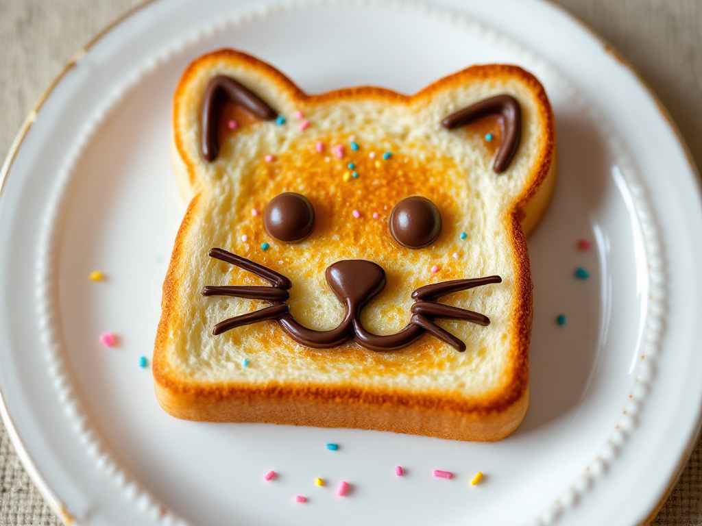

Tostadas de Gatito
¡Preparemos unas tostadas adorables!

Información:
Una receta sencilla y rápida para desayunos divertidos.
- Dificultad: Baja.
- Tiempo total: 10 min.
- Reposo: No requiere.
Ingredientes:
- Pan de molde: 2 rebanadas
- Mantequilla: 1 cucharada
- Mermelada: 2 cucharadas
- Chocolate derretido para decorar.
- Chispas de colores para los ojos.
Pasos:
- Tuesta las rebanadas de pan.
- Unta mantequilla sobre el pan tostado.
- Extiende mermelada sobre la mantequilla.
- Usa chocolate derretido para dibujar la cara del gatito.
- Añade chispas de colores para los ojos.
- Sirve y disfruta de tus tostadas de gatito.
Volver a lista de recetas.